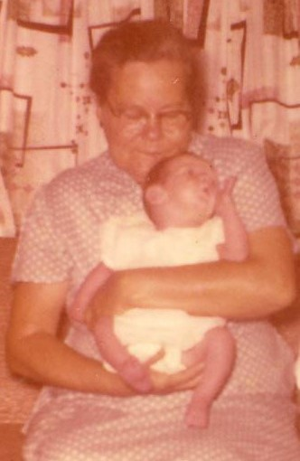

Laura Etta Palmer
1898–1959

Life Events
Born: June 25, 1898 — Pearson, Atkinson, Georgia, United States
Died: July 3, 1959 — Perry, Taylor, Florida, United States
Family
Father: Henry "H.W." Palmer
Mother: Laura Williams
Spouse: William Levi Herrin Sr.
Children
Military Service
No military service information has been added.
Biography
Laura Etta Palmer was born on June 25, 1898, in Pearson, Georgia, the daughter of Henry Palmer and Laura Williams. She grew up in south Georgia and as a young woman married William Levi Herrin. Together they would raise a large family of ten children.
By 1920, Laura Etta and William were living in Clinch County with their first two children, Ollie Clayton and James Talmage. During the following decade, the family moved to the Pearson area of Atkinson County. By 1930, Laura Etta was raising six children at home: Ollie, James, Ida Mae, Gladys, Mary Lou, and Dorothy.
The family continued to grow with the births of William "Billy," Evelyn, and Shelby Jean during the 1930s. By 1940, Laura Etta and William had moved their family from Georgia to Lafayette County, Florida. Their youngest child, Deloris, was born in Florida in 1942. By 1950, the older children had begun establishing homes and families of their own, while Dorothy, Billy, Evelyn, Shelby Jean, and Deloris remained with their parents.
Laura Etta spent her later years in the Mayo and Perry areas of Florida. On July 3, 1959, she died at the Perry home of her daughter Ollie Mae and son-in-law Dewey Singletary. She was 61 years old. She was buried at Woodlawn Cemetery in Perry.
Laura Etta's obituary provides a glimpse of the family she left behind. In addition to her husband and children, she had 21 grandchildren. Her surviving brothers included Elias Palmer of Pearson, Georgia, and Frank Palmer of Punta Gorda, Florida.
Photos
No additional photographs have been added.
Sources
-
1920 United States Census — William Levi Herrin Household
Type: Census1920 United States Census recording William L. Herren and his family in Clinch County, Georgia. William was recorded as a farmer working a general farm. The census records his daughter Ollie under her original name, Ollie Clayton.
Location: District 1061, Clinch, Georgia, United States
Household: William L. Herren Household
Household Members:
- William L. Herren, head, age 27
- Laura E. Herren, wife, age 22
- Ollie Clayton Herren, daughter, age 2 3/12
- James T. Herren, son, age 2/12
Supports: William Levi Herrin and Laura Etta Palmer residing in Clinch County, Georgia in 1920, William Levi Herrin working as a farmer, Ollie Clayton Herrin residing with her parents, James Talmage Herrin residing with his parents, Ollie Herrin recorded under her original name, Ollie Clayton
-
1930 United States Census — William Levi Herrin Household
Type: Census1930 United States Census recording the household of William L. Herrin in Pearson, Atkinson County, Georgia. William was recorded as a farmer on a general farm, and the family owned its home.
Location: Pearson, Atkinson, Georgia, United States
Household: William L. Herrin Household
Household Members:
- William L. Herrin, head, age 38
- Laura Herrin, wife, age 32
- Ollie Herrin, daughter, age 12
- James Herrin, son, age 10
- Ida Mae Herrin, daughter, age 8
- Gladys Herrin, daughter, age 5
- Mary L. Herrin, daughter, age 3
- Dorothy Herrin, daughter, age 2
Supports: William Levi Herrin and Laura Etta Palmer residing in Pearson, Georgia in 1930, William Levi Herrin working as a farmer, The Herrin family owning its home, Ollie, James, Ida Mae, Gladys, Mary Lou, and Dorothy residing with their parents
-
1940 United States Census — William Levi Herrin Household
Type: Census1940 United States Census recording William and Laura Etta Herrin and their family in Lafayette County, Florida. The family surname was recorded as Harring. The census reports their earlier residence in Georgia near the Pearson and Atkinson County area.
Location: Lafayette, Florida, United States
Household: William L. Harring Household
Household Members:
- William L. Harring, head, age 47
- Laura E. Harring, wife, age 40
- Ollie Mae Harring, daughter, age 22
- James Harring, son, age 20
- Ida Mae Harring, daughter, age 18
- Gladys Harring, daughter, age 15
- Mary Lou Harring, daughter, age 13
- Dorothy Harring, daughter, age 10
- Billie Harring, son, age 8
- Evelyn Harring, daughter, age 5
- Shelby Dean Harring, daughter, age 1
Supports: William Levi Herrin and Laura Etta Palmer residing in Lafayette County, Florida in 1940, The Herrin family's move from Georgia to Florida, Nine children residing with William and Laura Etta, Ollie recorded as Ollie Mae by 1940, William Levi Herrin Jr. recorded as Billie, Shelby Jean Herrin recorded as Shelby Dean
-
1950 United States Census — William Levi Herrin Household
Type: Census1950 United States Census recording William and Laura Etta Herrin and five of their children in Lafayette County, Florida. William was still working as a farmer.
Location: Lafayette, Florida, United States
Household: William L. Herrin Household
Household Members:
- William L. Herrin, head, age 58
- Laura E. Herrin, wife, age 55
- Dorothy Herrin, daughter, age 20
- Billy Herrin, son, age 17
- Evelyn Herrin, daughter, age 16
- Shelby J. Herrin, daughter, age 11
- Deloris Herrin, daughter, age 7
Supports: William Levi Herrin and Laura Etta Palmer residing in Lafayette County, Florida in 1950, William Levi Herrin working as a farmer, Dorothy, Billy, Evelyn, Shelby Jean, and Deloris residing with their parents, Deloris Herrin recorded as born in Florida
-
Death Certificate of Laura Etta Herrin
Type: Death CertificateFlorida death certificate for Laura Etta Herrin. The certificate records her birth on June 25, 1898, in Pearson, Georgia; her parents as Henry Palmer and Laura Williams; and her usual residence as Mayo, Lafayette County, Florida. Laura Etta died in Perry on July 3, 1959. Mrs. Dewey Singletary, her daughter Ollie Mae, was the informant.
Location: Perry, Taylor, Florida, United States
Supports: Laura Etta Herrin's birth date and birth place, Laura Williams as Laura Etta Herrin's mother, Henry Palmer as Laura Etta Herrin's father, Laura Etta Herrin's death date and death place, Laura Etta Herrin's residence in Mayo, Florida, Ollie Mae Singletary as the informant, Laura Etta Herrin's burial at Woodlawn Cemetery in Perry
-
Obituary of Laura Etta Palmer Herrin
Type: ObituaryObituary for Laura Etta Palmer Herrin published in the Tallahassee Democrat on July 5, 1959. The obituary states that she died at the Perry home of her daughter, Mrs. Dewey Singletary, and identifies her surviving family, including her husband, children, 21 grandchildren, and brothers Elias Palmer and Frank Palmer.
Location: Perry, Taylor, Florida, United States
Supports: Laura Etta Herrin's death in 1959, Laura Etta Herrin dying at the home of her daughter Ollie Mae Singletary, William Levi Herrin as Laura Etta Herrin's husband, Family relationships, Laura Etta Herrin having 21 grandchildren at the time of her death, Elias Palmer and Frank Palmer as Laura Etta Herrin's brothers